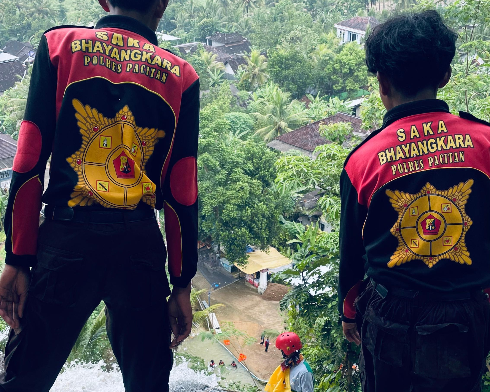
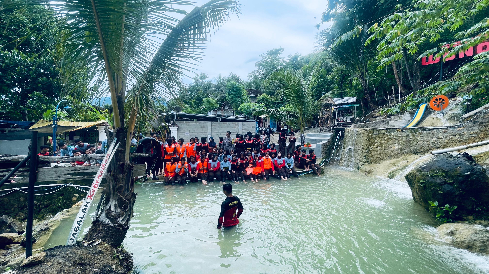
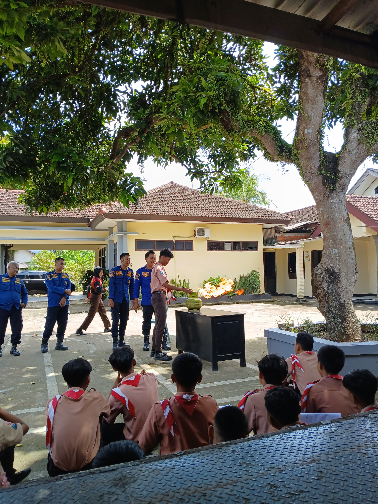

KRIDA PPB
Membentuk anggota yang tangguh, sigap, dan terampil dalam pencegahan serta penanggulangan bencana untuk membantu masyarakat dan menjaga keselamatan lingkungan.
Membentuk anggota yang tangguh, sigap, dan terampil dalam pencegahan serta penanggulangan bencana untuk membantu masyarakat dan menjaga keselamatan lingkungan.
Krida PPB (Penanggulangan Bencana) merupakan salah satu krida dalam Saka Bhayangkara yang mempelajari pengetahuan dan keterampilan tentang pencegahan, kesiapsiagaan, tanggap darurat, serta penanganan bencana alam maupun nonalam. Anggota Krida PPB dilatih untuk memiliki kepedulian sosial, kemampuan bekerja sama, dan kesiapan dalam menghadapi situasi darurat.
Menjadi generasi muda yang tangguh, peduli, dan siap berperan aktif dalam upaya penanggulangan bencana.
Anggota
Kegiatan
Prestasi

Memimpin dan mengkoordinasikan seluruh kegiatan Krida PPB serta bertanggung jawab atas pelaksanaan program kerja yang berkaitan dengan pencegahan dan penanggulangan bencana.




